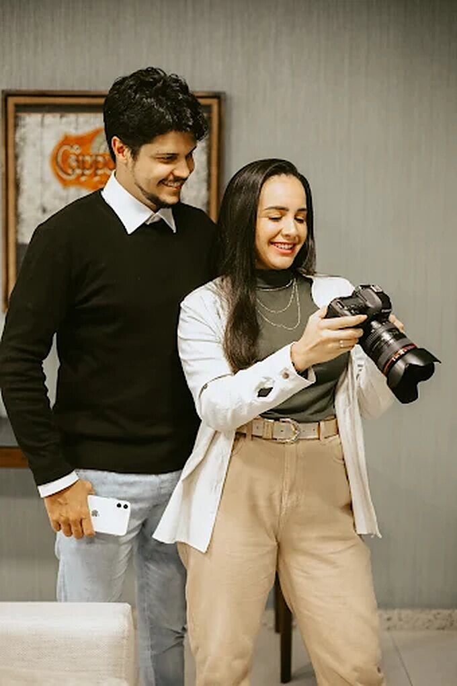

Casamentos, destination wedding e pré-wedding com um olhar sensível e atemporal, em um dos destinos mais encantadores do Brasil.
Trancoso · Arraial d'Ajuda · Porto Seguro · Eunápolispágina
Fotógrafos de casamento na Bahia
Fotografamos casamentos para guardar o que foi sentido, não só o que foi visto. Um olhar sensível e atemporal, com imagens autênticas dos momentos mais especiais do grande dia.
Seleção
Casamentos e ensaios
Ver mais no Instagram


Portfólio
Galeria de imagens

Sobre nós
Uma dupla, um olhar, o seu grande dia
Somos Ricardo e Monick, a dupla por trás da Dupla Art Fotografia. Especialistas em casamentos em Porto Seguro e região, registramos os momentos únicos do grande dia com imagens autênticas, emocionantes e feitas para durar.
Do ensaio de pré-wedding à festa, conduzimos tudo com leveza e proximidade, para que você chegue à frente das câmeras à vontade. Com base em Eunápolis, viajamos para Trancoso, Arraial d'Ajuda e onde a sua celebração acontecer.
- 5,0nota no Google
- Destinationcasamentos em Trancoso e Arraial
- Studioem Eunápolis, Bahia
Cada casamento é único.
As imagens também deveriam ser.
O que fazemos
Serviços
- 01
Fotografia de casamento
Cobertura do preparativo à festa, com olhar sensível e os momentos que contam a sua história.
- 02
Destination wedding
Trancoso, Arraial d'Ajuda, Porto Seguro e onde a celebração acontecer.
- 03
Pré-wedding e ensaio de casal
Um ensaio leve, na praia ou ao pôr do sol, para chegar ao grande dia à vontade.
- 04
Debutantes e 15 anos
Um ensaio e uma cobertura à altura de uma das datas mais esperadas.
- 05
Retratos e corporativo
No Dupla Art Studio, em Eunápolis: retratos, fotografia corporativa, gestantes e família.
- 06
Álbuns e fotolivros
Entrega cuidadosa, com álbuns e fotolivros para guardar e folhear por toda a vida.
Como trabalhamos
Do primeiro contato à entrega
- 01
Conversa
Entendemos o casal, o lugar e o que vocês sonham para o dia.
- 02
Ensaio
Um pré-wedding leve para se conhecerem diante da câmera.
- 03
Cobertura
Presença discreta, olhar autoral e atenção ao que realmente emociona.
- 04
Entrega
Seleção, tratamento e uma entrega feita com carinho, do início ao fim.
Depoimentos
Quem viveu com a gente
“Melhor escolha do casamento foi ter a dupla art como fotógrafos.”
“Moni e Rick são proativos, carinhosos, originais, autênticos, pacientes, divertidos...”
“Vocês são ótimos profissionais, e buscam não só entender a necessidade do cliente…”
“Vocês deixaram uma marca em nós, continuem assim.”
“Vocês são profissionais incríveis!”
Dúvidas frequentes
Antes de conversar
Em quais cidades vocês fotografam casamentos?
Atendemos Porto Seguro e região, com destaque para Trancoso e Arraial d'Ajuda, além de Eunápolis e outros destinos onde a celebração acontecer.
Vocês fazem destination wedding?
Sim. Somos especialistas em casamentos destination wedding na Bahia, com cobertura do ensaio ao grande dia.
Vocês fazem pré-wedding e ensaio de casal?
Sim. Fazemos ensaios de pré-wedding e de casal em locações como praia, pôr do sol e arquitetura, de forma leve e sem pressa.
Vocês fotografam debutantes e festas de 15 anos?
Sim, além de retratos, gestantes, família e fotografia corporativa no Dupla Art Studio.
Onde fica o estúdio?
O Dupla Art Studio fica na Av. Rui Barbosa, 85, Centro, Eunápolis - BA.
Como solicitar um orçamento?
Chame a gente no WhatsApp, (73) 99955-0462, informando a data, o local e o tipo de ensaio ou cobertura.
Contato
Vamos contar a história do seu casamento em imagens?
Falar no WhatsAppEunápolis · BA
45820-281